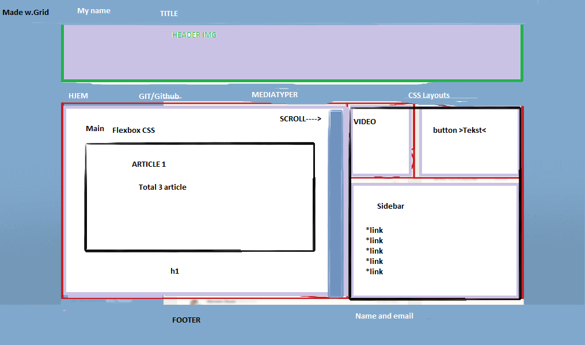
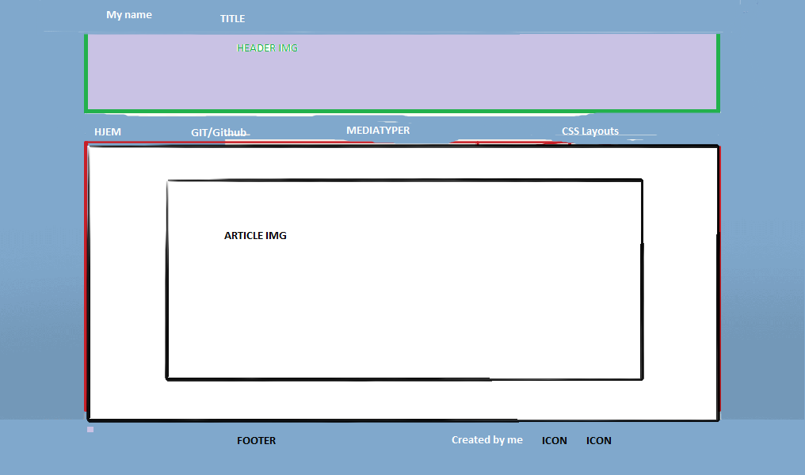
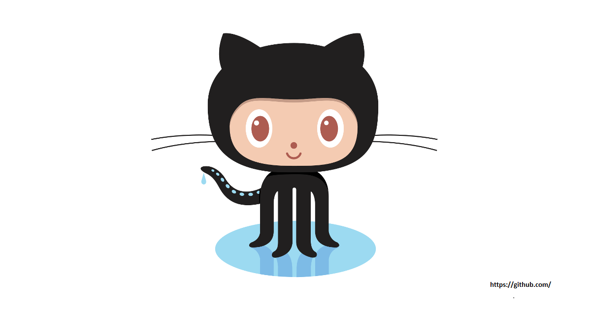

Sketch av oppgaven
 Github
Mediatyper

Medietyper.
Det finnes en rekke medietyper i CSS, som f.eks screen, print,projector,speech,braille,tty,tv,embrossed,handheld og 3d-glasss. Man kobler da de forskjellige stilarkene til HTML documentet og nettsiden velger ut den som passer. Noen stilark har lite etterspøsel, og blir derfor ikke benyttet. Medietypen print blir brukt for å printe ut siden. Derfor er det viktig å lage et rent stilark med fokus på innhold, og ikke design.- Fjerne unødvendig design, meny og annonser.
- Siden bør helst være svart/hvitt.
- Helst serif -font.
- Større skrift, for de som ser dårlig.
- Fjerne annimasjoner og video.
- Helst få plass til alt på en A4 ark
Mediatypen handheld skulle benyttes til å tilpasse størrelsen og designet åpå nettsiden for mobiltelefoner. Men problemet er at mobiltelefoner har forskjellige størrelser og nettbrett regnes som en mobil-enhet. Det var ikke mulig å lage et stilaark alle mobilenheter. Derfor blir det nye systemet benyttet istedet. Den kalles media querries.
CSS Layouts

Layout og design.
Det finnes en rekke forskjellige metoder å designe en nettside på. Her er 4 teknikker for posisjonering av elementer i CSS.- Standard posisjon heter «static». Der vises alle elementene i den rekkefølgen de er skevet i HTML dokumentet, og alt følger venstrekanen nedover.
- Relative – Det er den enkleste teknikken. Minner litt om teknikken «static». Når man forandrer egenskapene i topp-, høyre-, bunn- og venstre til et relativt posisjonert element blir den opprinnelige posisjonen til elementene holdt av i nettsiden. Og det kan skje at elementene overlapper hverendre. Derfor egner relativ posisjonering seg for «småjusteringer».
- Fixed (låst) Med fixed posisjon kan vi velge å la et element «bli igjen» på nettsiden når vi f.eks scroller siden opp eller ned. Det er alltid plassert i forhold til nettleservinduet og ikke i forhold til innholdet. Dette kan brukes i mange scenarier som f.eks toppmenyer eller knapper som forblir på plass osv.
- Absolute. Hvis et eliment er plassert i et body tagg vil absolute fungere lik som fixed, men den vil følge med i scrollingen av siden. Den er posjonert i forhold til øvre venstre hjørne på nettsiden og ikke øvre venstre hjørne på nettleseren slik som fixed. Man posisjonerer alltid rundt foreldreelementet, så man kan lage tekst som dekker et bilde.
Posisjonering skalerer ikke så derfor benyttes posisjoneringteknikken på enkelte elementer.